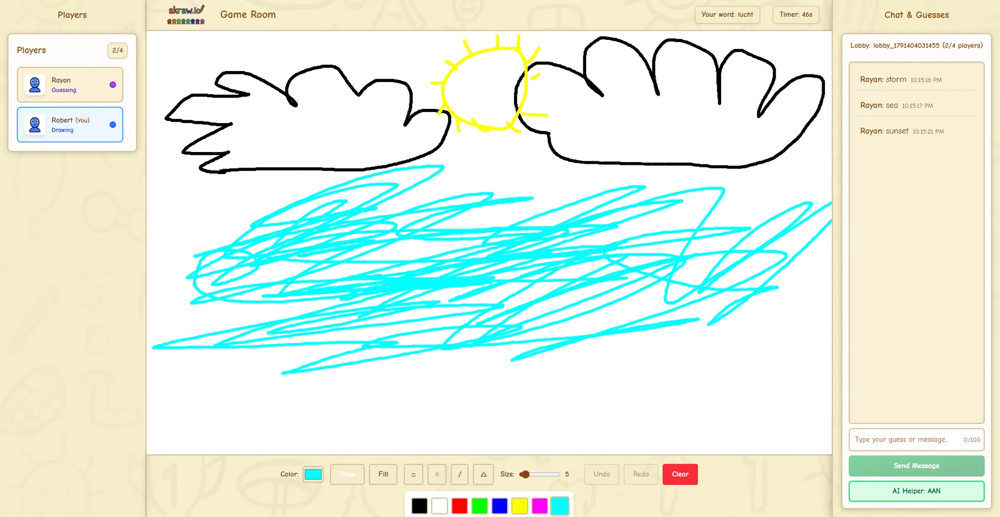

Question
How can a countdown make remaining time clearer?
06 / Collaborative project · Frontend
A team-built drawing-and-guessing game. I contributed to early interface structure, canvas interaction and UX/UI exploration.
Multiplayer infrastructure and later game features were developed collaboratively.

The game
The restored build was exercised in two browser sessions to inspect its real multiplayer interface.
Players enter a shared lobby.
One player sees the word and draws.
Others respond through chat.
Runtime validation
Authentic gameplay capture from a local two-session test.

Known limitations: the historical build's timer did not advance rounds; language selection, the AI helper and some advanced drawing tools were not working reliably.
My role
Early interface and interaction work within the wider team project.
App.vue layout.CanvasBoard.vue drawing baseline and initial controls.The timer in the gameplay capture is from the later team build.
Try the interaction
This local portfolio demo is separate from the multiplayer game.
Draw with a mouse, touch, or pen. Use the controls above with a keyboard; focus the canvas for a visible focus indicator.
Canvas ready. This demo runs locally in your browser.
UX / iteration
How can a countdown make remaining time clearer?
Reviewed game timer patterns and documented visual directions.
Contributed to an early prototype and collected responses.
This is separate from the timer in the current team build.
Team project
The team developed multiplayer infrastructure, game state, chat, scoring, later canvas features and AI-helper wiring. These are shared project features, not individual claims.